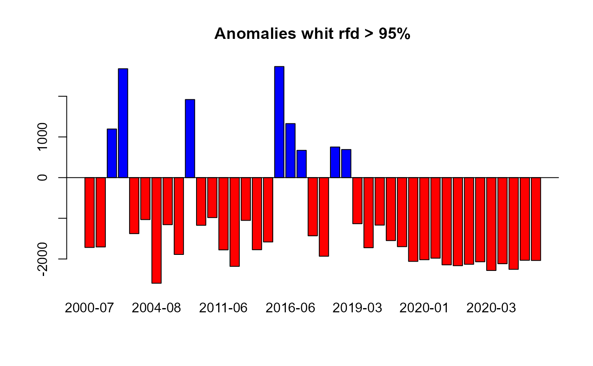
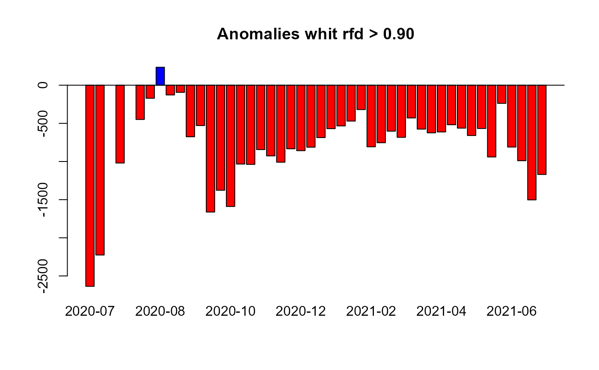
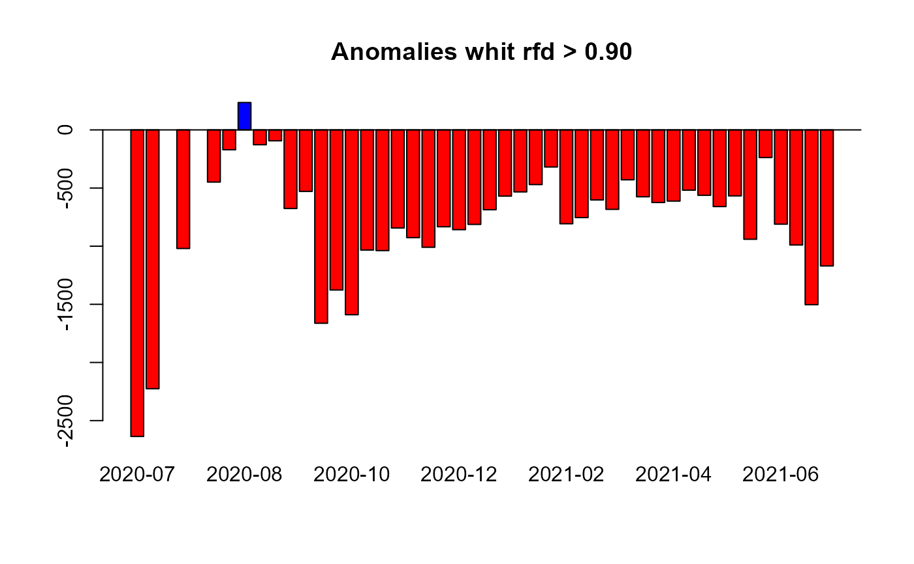
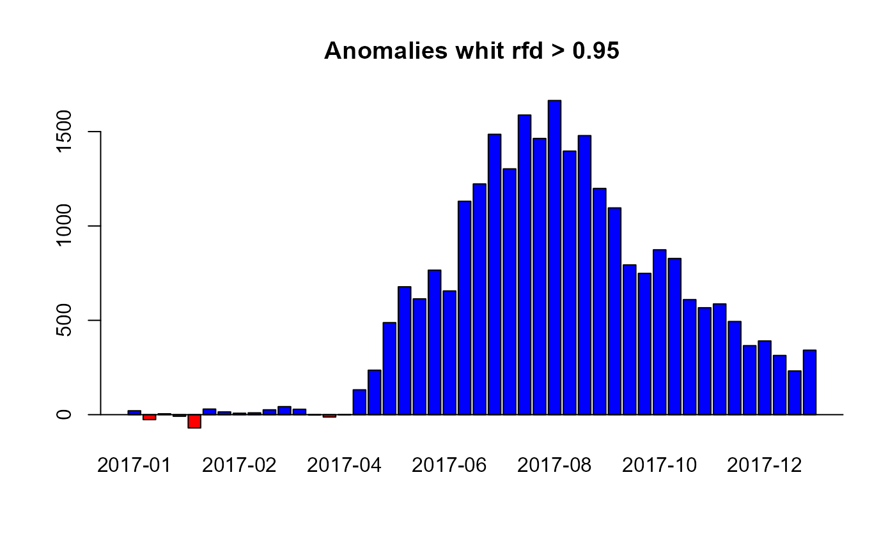
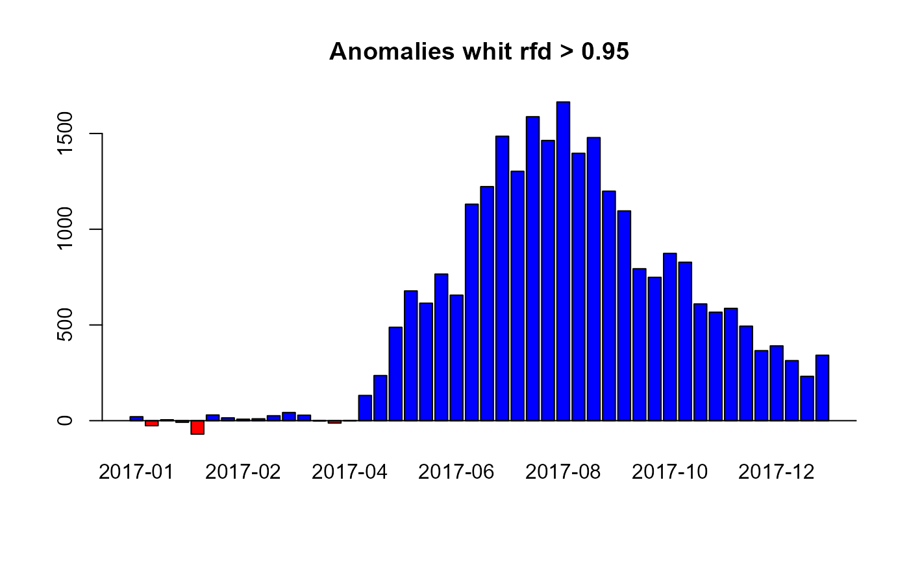

Based on the annual reference frequency distribution (rfd) of a vegetation index time series (e.g. a numeric vector of NDVI), calculates anomalies and how extreme these anomalies are (rfd position ranging from 0 to 100)
Arguments
- x
Numeric vector. A time series of a vegetation index (e.g. LAI, NDVI, EVI) or any other variable with seasonal behavior. The code has been optimized to work with integer values. Please re-scale the input values if necessary (e.g. NDVI ranging from 0.0000 to 1.0000, multiply by 10,000).
- dates
A date vector. The number of dates must be equal to the number of "x" values (numeric input vector).
- h
Numeric. Indicates the geographic hemisphere. This argument defines the starting date of the growing season. h = 1 for the Northern Hemisphere (season starting on January 1st), h = 2 for the Southern Hemisphere (season starting on July 1st).
- refp
Numeric vector with the correlative number of dates to be used as reference period. For example, refp = c(1:388) for MODIS Vegetation Index 16-days composites MOD13Q1 (18/02/2000 – 18/12/2016)
- anop
Numeric vector with the correlative number of dates for the period in which the anomalies and rfd position (how extreme the anomalies are) will be calculated. For example anop = c(389:411) for the complete 2017 of MODIS Vegetation Index 16-days composites MOD13Q1 (01/01/2017 – 19/12/2017). anop & refp can be overlapped.
- rge
Numeric vector with two values setting the minimum and maximum values of the response variable (e.g. NDVI) used in the analysis. We suggest the use of theoretically based limits. For example in the case of MODIS NDVI or EVI, it ranges from 0 to 10,000, so rge = c(0,10000)
- output
Character string. Defines the output values. 'both' (default) returns both anomalies and rfd position together as a single numeric vector, 'anomalies' returns only anomalies, 'rfd' returns only rfd values (how extreme the anomalies are) and 'clean' returns only extreme anomalies, i.e. anomalies at which a given rfd is overpass (e.g. 0.90). This critical threshold is set by the users using the rfd argument.
- rfd
Numeric. This argument only applies when the argument output = 'clean'. It defines the percentile (from 0 to 0.99) of the reference frequency distribution, for which anomalies are not flagged as extreme anomalies. For example, if 'rfd = 0.90' only anomalies falling outside the '0.90 rfd' (default value) will be flagged as extreme anomalies while the rest will be neglected (NA values). Please notice that 'rfd = 0.90' implies that the 5% of the most extreme positive and 5% of the most extreme negative anomalies will be considered.
Details
Calculates anomalies and a probabilistic measure of how extreme the anomalies are using a numeric vector of vegetation canopy greenness, e.g. satellite based Normalized Difference Vegetation Index (NDVI) or Enhanced Vegetation Index (EVI). For this purpose, it divides the time series (numeric vector) of vegetation greenness into 2: the reference period, from which the annual phenological reference is calculated (same as Phen function), and the observation period, for which we want to calculate anomalies. This anomalies can be filtered by the position of the observation within the historical rfd. Users can, for example, set 'rfd = 0.95' to consider only anomalies that outside the 95% rfd of historical records.
Examples

# \donttest{
library(lubridate)
#>
#> Attaching package: ‘lubridate’
#> The following objects are masked from ‘package:base’:
#>
#> date, intersect, setdiff, union
library(terra)
#> Warning: package ‘terra’ was built under R version 4.3.3
#> terra 1.7.78
## Testing raster data from Central Chile (NDVI), h=2##
# Load data
f <- system.file("extdata/MegaDrought_spatRast.rda", package = "npphen")
MegaDrought <- readRDS(f)
# Dates
data("modis_dates")
# Generate a Raster time series using a raster stack and a date database from Central Chile
# Obtain data from a particular pixel generating a time series
md_pixel <- cellFromXY(MegaDrought, cbind(313395, 6356610))
md_pixelts <- as.numeric(MegaDrought[md_pixel])
plot(modis_dates, md_pixelts, type = "l")
 # Anomaly detection for the given pixel
anomRFD_MD <- ExtremeAnom(
x = md_pixelts, dates = modis_dates,
h = 2, refp = c(1:423), anop = c(884:929), rfd = 0.9, output = "both", rge = c(0, 10000)
)
# Basic plot
selection <- which(anomRFD_MD[47:92] > 90)
barplot(
names = format.Date(modis_dates[884:929], format = "%Y-%m"),
anomRFD_MD[1:46], col = ifelse(anomRFD_MD[1:46] < 0, "red", "blue"),
main = "Anomalies whit rfd > 0.90"
)
abline(h = 0)

## Testing with the Bdesert_stack from the Atacama Desert, Northern Chile (NDVI),
# showing extreme positive anomalies (greening)##
# Load data
# SparRaster
f <- system.file("extdata/Bdesert_spatRast.rda", package = "npphen")
Bdesert <- readRDS(f)
# Generate a Raster time series using a raster stack and a date database from Northern Chile
# Obtain data from a particular pixel generating a time series
bd_pixel <- cellFromXY(Bdesert, cbind(286638, 6852107))
bd_pixelts <- as.numeric(Bdesert[bd_pixel])
plot(modis_dates, bd_pixelts, type = "l")
# Anomaly detection for the given pixel
anomRFD_MD <- ExtremeAnom(
x = md_pixelts, dates = modis_dates,
h = 2, refp = c(1:423), anop = c(884:929), rfd = 0.9, output = "both", rge = c(0, 10000)
)
# Basic plot
selection <- which(anomRFD_MD[47:92] > 90)
barplot(
names = format.Date(modis_dates[884:929], format = "%Y-%m"),
anomRFD_MD[1:46], col = ifelse(anomRFD_MD[1:46] < 0, "red", "blue"),
main = "Anomalies whit rfd > 0.90"
)
abline(h = 0)

## Testing with the Bdesert_stack from the Atacama Desert, Northern Chile (NDVI),
# showing extreme positive anomalies (greening)##
# Load data
# SparRaster
f <- system.file("extdata/Bdesert_spatRast.rda", package = "npphen")
Bdesert <- readRDS(f)
# Generate a Raster time series using a raster stack and a date database from Northern Chile
# Obtain data from a particular pixel generating a time series
bd_pixel <- cellFromXY(Bdesert, cbind(286638, 6852107))
bd_pixelts <- as.numeric(Bdesert[bd_pixel])
plot(modis_dates, bd_pixelts, type = "l")
 # Anomaly detection for the given pixel
anomRFD_BD <- ExtremeAnom(
x = bd_pixelts, dates = modis_dates,
h = 2, refp = c(1:423), anop = c(723:768), rfd = 0.9, output = "both", rge = c(0, 10000)
)
# Basic plot
selection <- which(anomRFD_BD[47:92] > 95)
# basic plot
barplot(
names = format.Date(modis_dates[723:768], format = "%Y-%m"),
anomRFD_BD[1:46], col = ifelse(anomRFD_BD[1:46] < 0, "red", "blue"),
main = "Anomalies whit rfd > 0.95"
)
abline(h = 0)

# }
# Anomaly detection for the given pixel
anomRFD_BD <- ExtremeAnom(
x = bd_pixelts, dates = modis_dates,
h = 2, refp = c(1:423), anop = c(723:768), rfd = 0.9, output = "both", rge = c(0, 10000)
)
# Basic plot
selection <- which(anomRFD_BD[47:92] > 95)
# basic plot
barplot(
names = format.Date(modis_dates[723:768], format = "%Y-%m"),
anomRFD_BD[1:46], col = ifelse(anomRFD_BD[1:46] < 0, "red", "blue"),
main = "Anomalies whit rfd > 0.95"
)
abline(h = 0)

# }